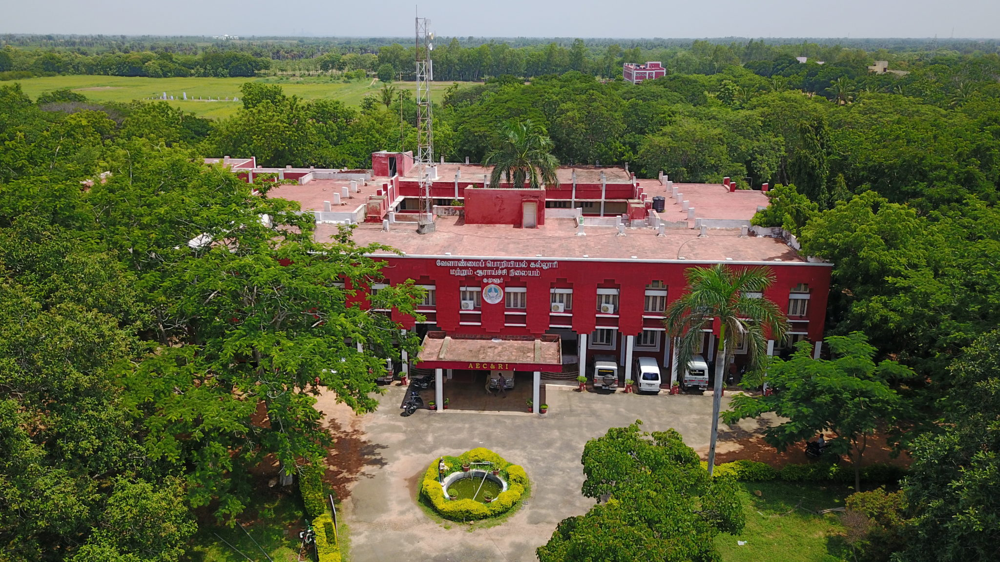
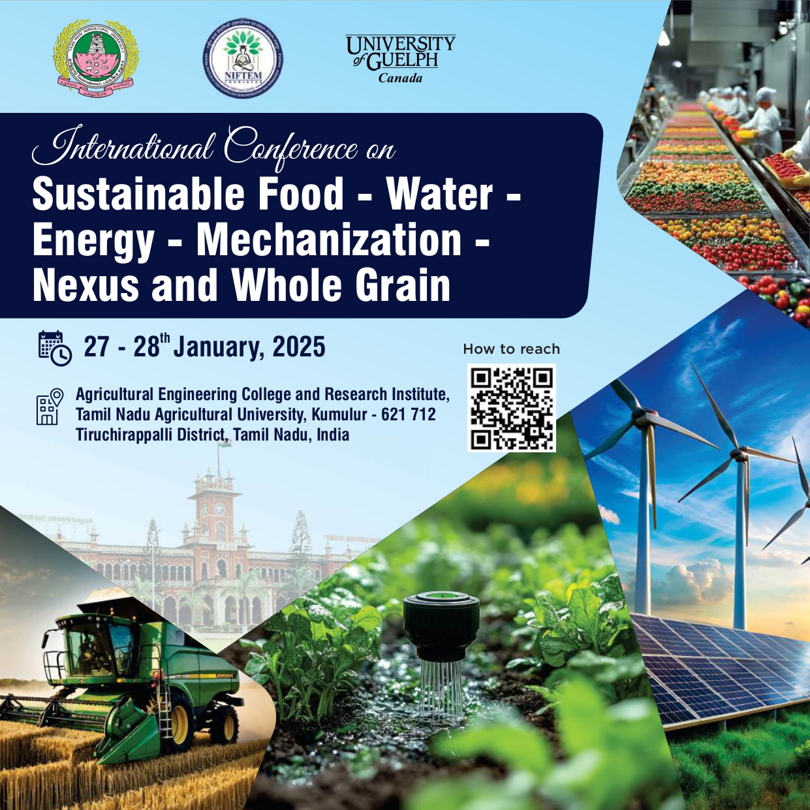

International Conference on Sustainable Food - Water - Energy - Mechanization - Nexus and Whole Grain
Date: 27th - 28th January, 2025
Venue: Agricultural Engineering College and Research Institute, Tamil Nadu Agricultural University, Kumulur, Tiruchirappalli District, Tamil Nadu, India
Welcome to the Conference!
We are thrilled to invite you to the International Conference on Sustainable Food - Water - Energy - Mechanization - Nexus and Whole Grain. This event brings together leading scholars, researchers, and industry professionals from around the world to discuss recent advancements and challenges in the fields of agriculture, technology, and sustainability.
Conference Highlights
- Keynote Speeches by Renowned Experts
- Technical Sessions and Workshops
- Panel Discussions on Emerging Trends
- Networking Opportunities with Global Peers
- Poster Presentations and Exhibitions